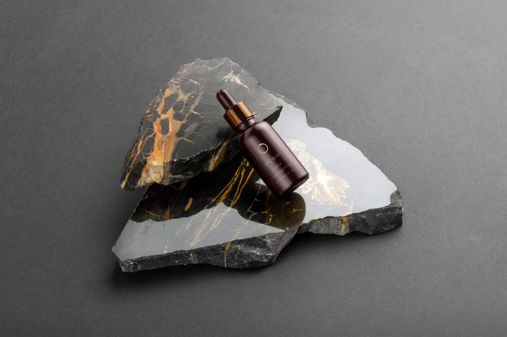
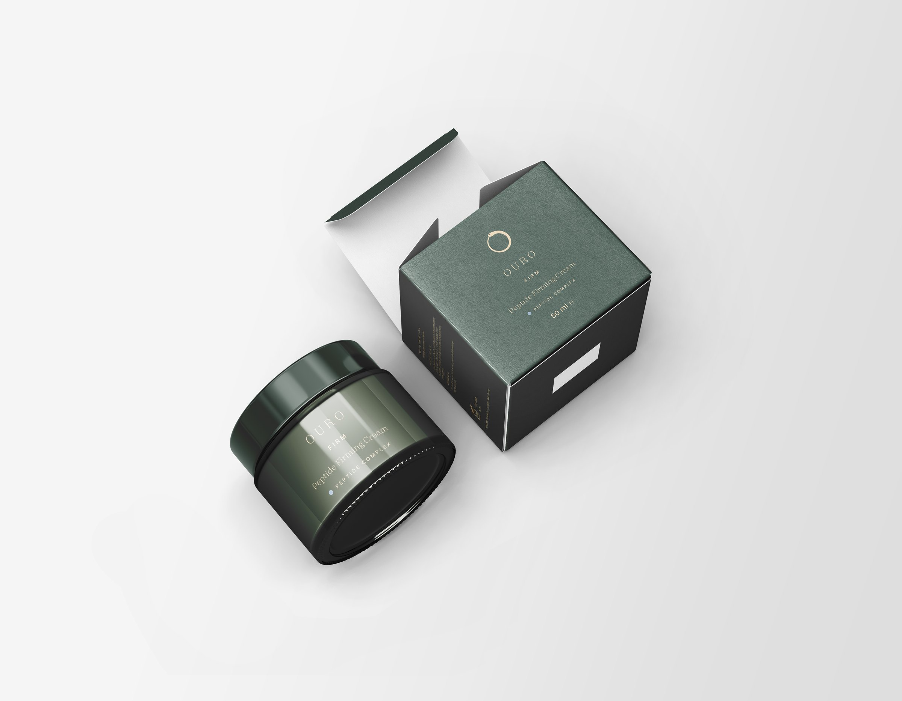
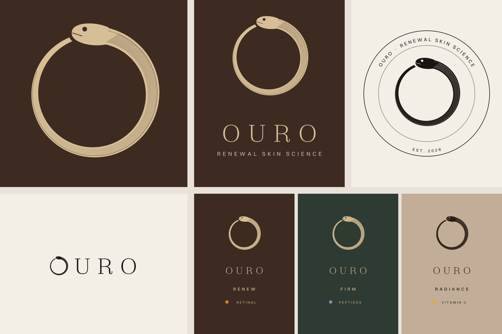
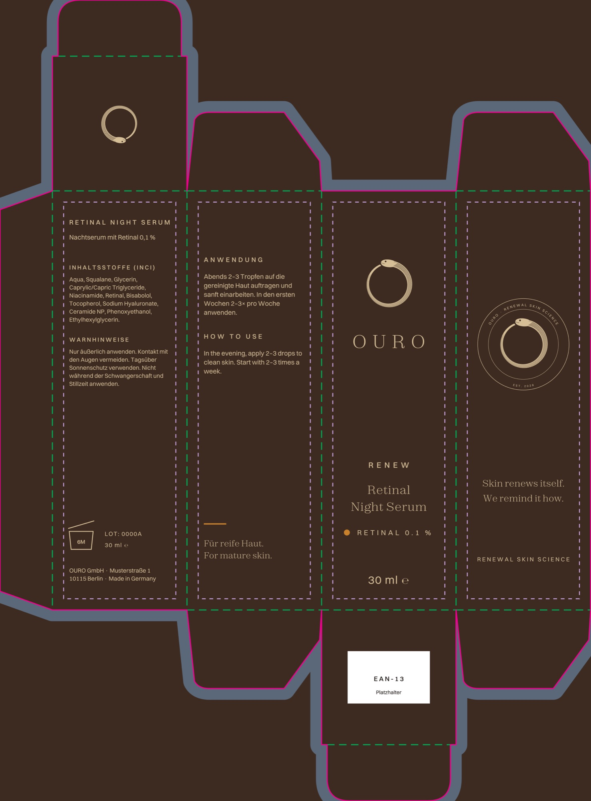
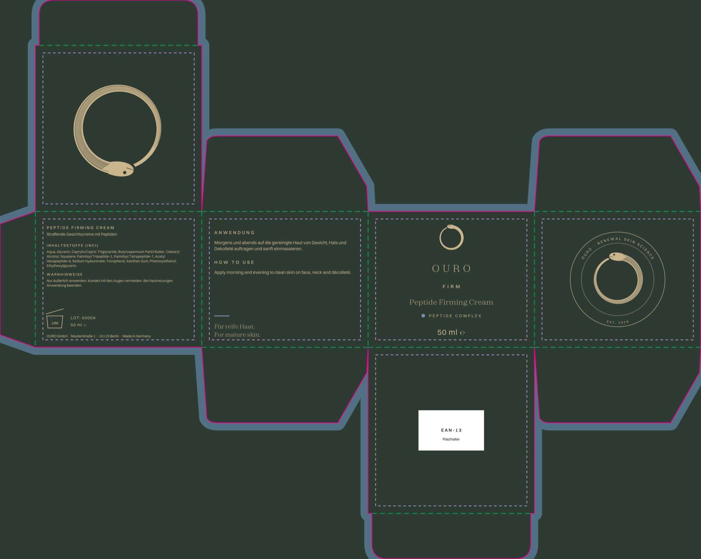
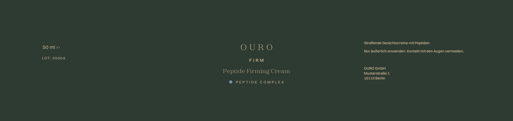
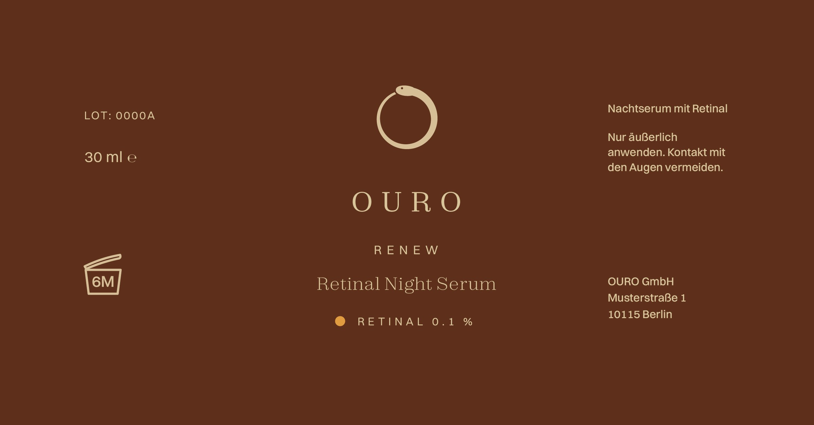
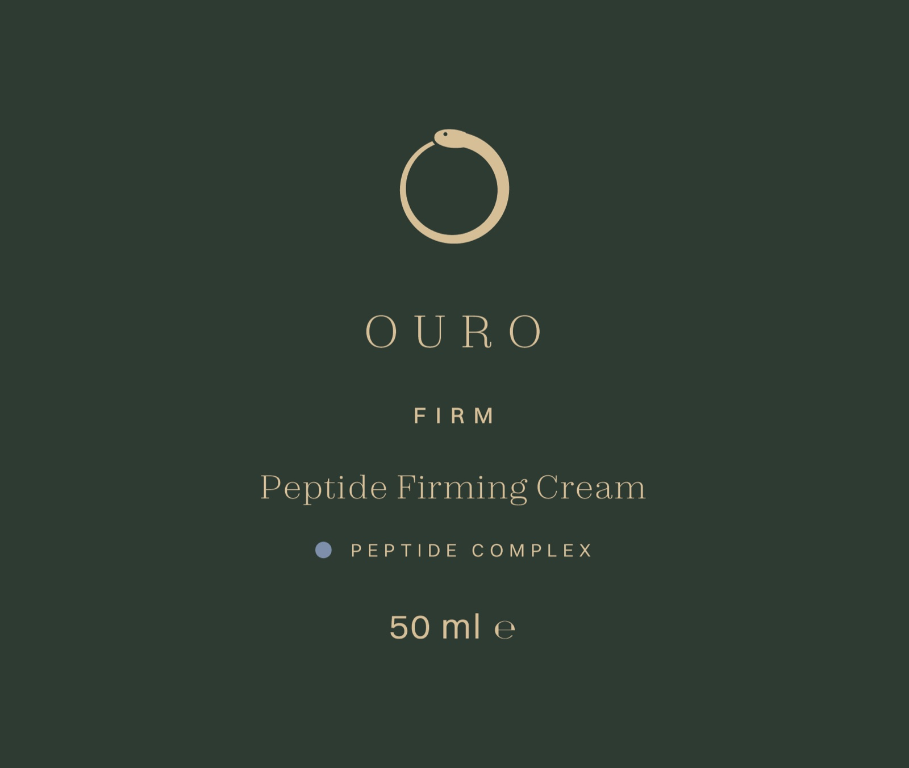

Ouro
- Client
- OURO Renewal Skin Science
- Year
- 2026
- Scope
- Identity, Logo system, Packaging
A skincare brand built around the ouroboros, the snake that renews itself. I designed the logo system in espresso, champagne and ink, the product line Renew, Firm and Radiance, and the full packaging: folding cartons with dielines and labels for the bottle and the jar.



From design to print
How the packaging went from a mark to print-ready files: the brand system first, then dielines for every carton, then labels and print data with all legal details.
Brand system
One mark in several versions for different sizes, a light serif wordmark and a colour code for each product: espresso for Renew, moss for Firm, cashmere for Radiance. The small dot shows the active ingredient.

Dielines
Folding cartons with tuck flaps, built on the cutting and creasing lines. Every panel has its own content: front, ingredients, how to use, emblem, and a field for the barcode on the bottom flap.


Labels & print files
Wrap-around prints for the jar and the bottle, sized to the exact circumference so the front stays centred. Batch number, PAO symbol, volume with ℮ sign and a short German text on the sides.



Print specs
The technical side, prepared the way a print shop needs it.
- Formats
- Renew carton 36 × 36 × 112 mm · Firm carton 66 × 66 × 54 mm · jar lid Ø 64 mm
- Print data
- 3 mm bleed, safe zone inside the cut and crease lines, cut and crease lines on separate layers
- Material
- SBS solid bleached board 350 g/m² (Firm 400 g/m²), matt soft-touch lamination
- Finishing
- Hot foil stamping in champagne gold: mark and lettering on the cartons, mark on the jar lid
- Colours
- Espresso #3D2B22 · Moss #2E3B33 · Champagne #D6BF97 · active colours for retinal, peptides and vitamin C
- Legal details
- INCI list, warnings in German, PAO symbol (6M / 12M), batch number, volume with ℮, EAN-13 field